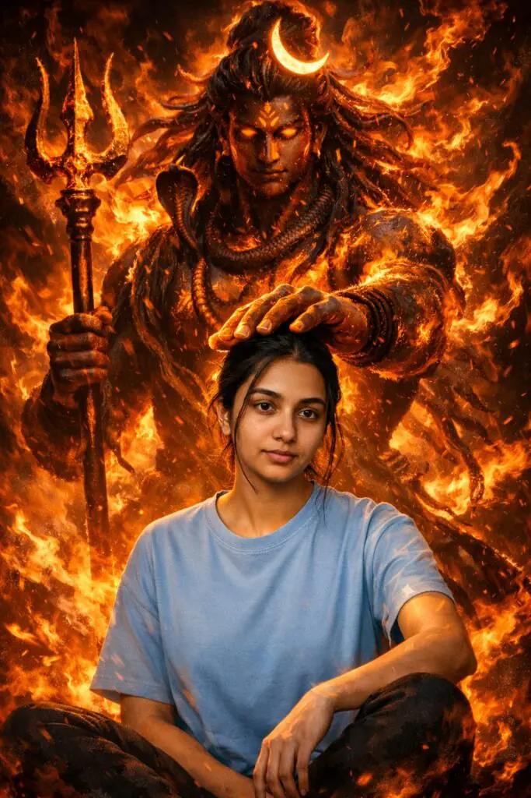
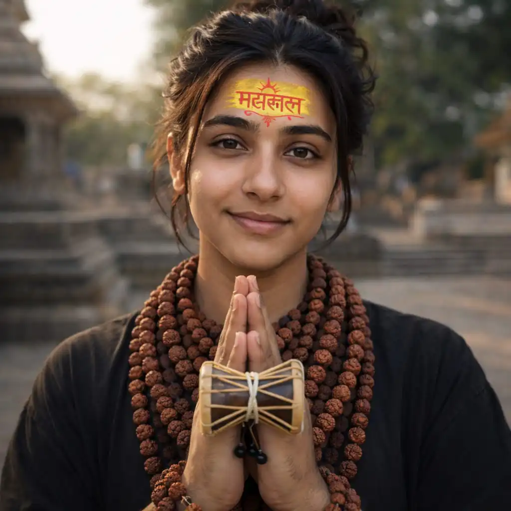

Har har mahadev friends, as we all know that our biggest day for devotion of shivji, Mahashivratri is coming on 15th February 2026.
In this article I will share best mahashivratri Photo prompt for high quality images.
Want more awesome prompts?
Join our community and get the latest viral prompts daily.
Follow on Instagram
? AI PROMPT
Create a highly dramatic, cinematic portrait using the uploaded photo of a person. Behind the person, generate a massive divine guardian inspired by Lord Shiva — glowing fiery eyes, long flowing hair, detailed trident, sacred ornaments, and a powerful aura made of flames and energy. The guardian should appear as a protective force, gently placing a strong hand over the person’s head to symbolize protection and strength.
Use dark, moody lighting with strong contrast, volumetric fire, smoke effects, cinematic rim light, ultra-realistic textures, sharp facial details, and 8K resolution. Keep the person natural and highly detailed while making the background intense, mythological, and epic. Depth of field, realistic shadows, and orange fire glow reflecting on the skin. Make it look like a movie poster — powerful, divine, and motivational.
Maintain exact facial identity, do not alter face structure, keep realistic skin texture.

? AI PROMPT
Create a highly dramatic, cinematic portrait using the provided reference image. Keep the person’s face, body posture, and natural features realistic and unchanged. Behind the person, generate a massive divine Lord Shiva–inspired guardian figure emerging from dark smoke and shadows, with glowing white eyes, subtle mystical aura, detailed trident, and long flowing hair. The guardian should gently place a powerful hand on the person’s head as a symbol of protection and strength.
Maintain a dark, moody environment with strong contrast, volumetric smoke, rim lighting, and ultra-realistic textures. Use a deep blue-grey cinematic color grade with soft warm highlights from the trident flame. Ensure professional HDR look, sharp focus on the subject, shallow depth of field, and perfect light falloff on the face.
Do NOT oversaturate colors, do NOT add extra props, do NOT change clothing, and avoid cartoonish or painterly styles. Keep the tone photorealistic, intense, spiritual, and powerful — like a high-budget movie

? AI PROMPT
Ultra-realistic cinematic 8K photograph, absolute face lock using the uploaded reference image as the only identity source. The face must remain exactly unchanged: identical bone structure, facial proportions, asymmetry, skin texture, pores, age, hairline, beard pattern if any, and natural expression. No beautification, no smoothing, no symmetry correction, no Al reinterpretation.
Full-body wide-angle realistic photograph of a stylish young man leaning calmly against a
textured urban wall. Eyes closed, arms crossed, one leg crossed over the other, peaceful and grounded body language. Natural, unposed stance.
Wardrobe: loose oversized white button-down aesthetic shirt with rolled sleeves, light blue wide-leg jeans with ripped knees, barefoot. Minimal accessories: thin silver necklace only. Hair is volumized, messy dark wavy hair with a clean taper fade on the sides. Clothing fabrics must show real creases, weight, and daylight texture.
Environment: behind him, a massive hyper-detailed street-art mural of Lord Shiva, painted realistically as urban graffiti. Shiva has blue skin, multiple arms, holding a trishula (trident) and a damru (drum), a cobra wrapped around his neck, tiger-skin loincloth. Shiva's face is oriented as if watching over the man. The mural background forms an intricate circular mandala in white. gold, and black, sharply detailed with visible wall grain, paint strokes, and weathering
Lighting: natural daylight, soft but directional, realistic shadows, subtle highlights on skin, fabric, and wall texture. Cinematic color grading with restrained contrast, deep blues and neutrals, no oversaturation. True photographic depth, real lens perspective, natural dynamic range.
Camera: wide-angle lens, eye-level, full-body framing, cinematic realism, shallow-to-moderate depth of field, background mural fully legible without distortion. High dynamic range, ultra-sharp
focus, no motion blur.
Style constraints: photorealistic, real-world street photography aesthetic, cinematic composition, no fantasy glow, no illustration look, no painterly artifacts, no Al plastic skin.
Aspect ratio: 3:4.

? AI PROMPT
create an Ultra-cinematic surreal portrait depicting Lord Shiva in a fiery divine form standing behind a young woman (referenced photo). Shiva is massive, ethereal and god-like, his entire body formed from living flames and molten embers, glowing lava-orange skin, intense burning eyes, crescent moon on his head, long flowing fiery hair, holding a Trishul. Flames swirl around him like divine energy, creating a powerful protective presence. Shiva is looking at this woman. In the foreground, referenced pictured woman sitting contrasting against the fiery background. Shiva’s hand rests gently above her head in a protective blessing gesture. Dramatic lighting, high contrast, warm orange and ember tones behind, cooler natural skin tones in foreground. ultra-detailed flames, volumetric fire, mystical atmosphere, divine surrealism, modern realism fusion, epic fantasy artwork, dark background.

? AI PROMPT
"An ultra-realistic 8K wide-angle portrait of the young man from the uploaded image. He has voluminous, messy dark wavy hair with a clean taper fade and a serene smile. He is standing with his hands joined in a respectful 'Namaste' gesture, holding a small traditional wooden damru. He wears several layers of traditional rudraksha bead necklaces and a thick rudraksha bracelet. On his forehead is a prominent yellow Mahakal tilak with red Hindi calligraphy and a sun symbol.

? AI PROMPT
"An ultra-realistic 8K wide-angle portrait of the young women from the uploaded image. Shehas voluminous, messy dark wavy hair with a clean taper fade and a serene smile. SHe is standing with her hands joined in a respectful 'Namaste' gesture, holding a small traditional wooden damru. SHe wears several layers of traditional rudraksha bead necklaces and a thick rudraksha bracelet. On her forehead is a prominent yellow Mahakal tilak with red Hindi calligraphy and a sun symbol.